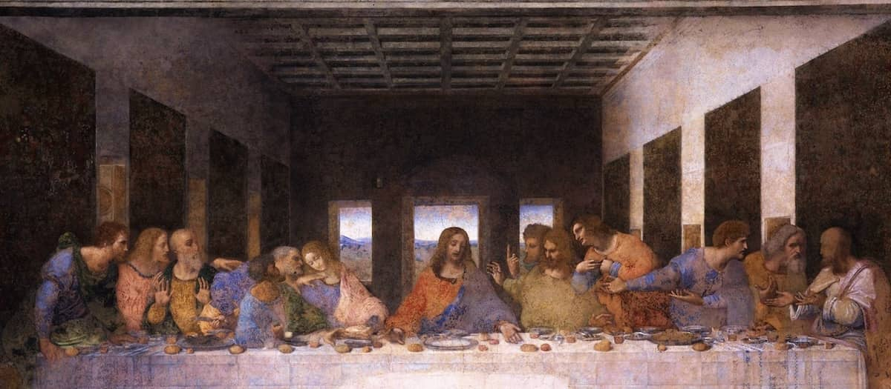
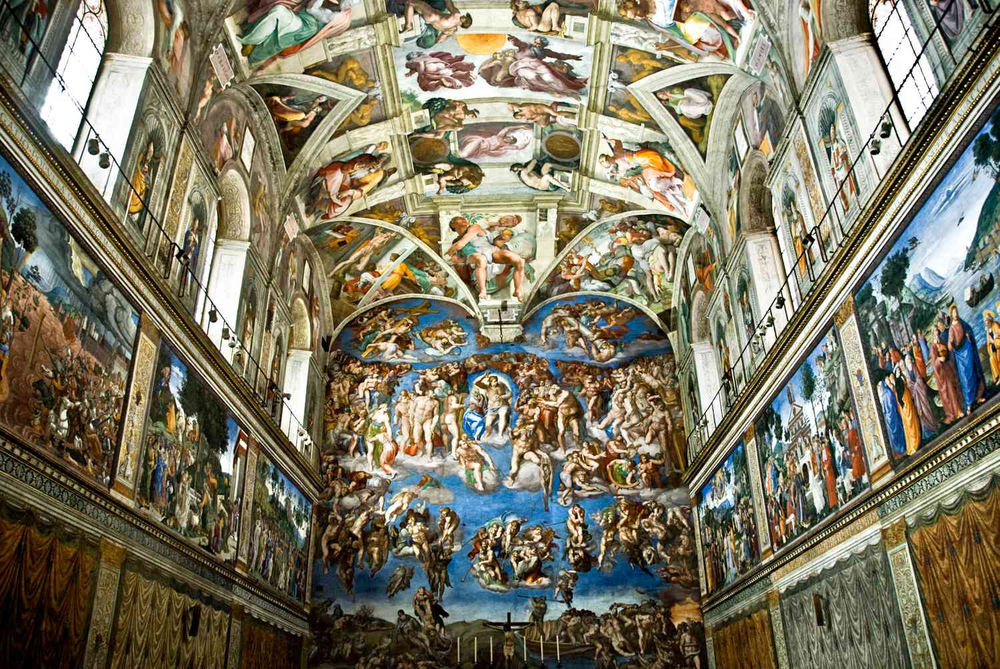
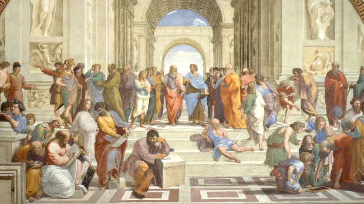
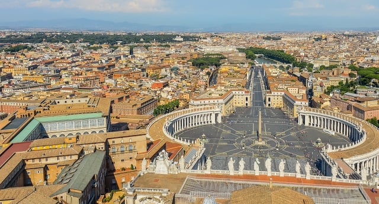
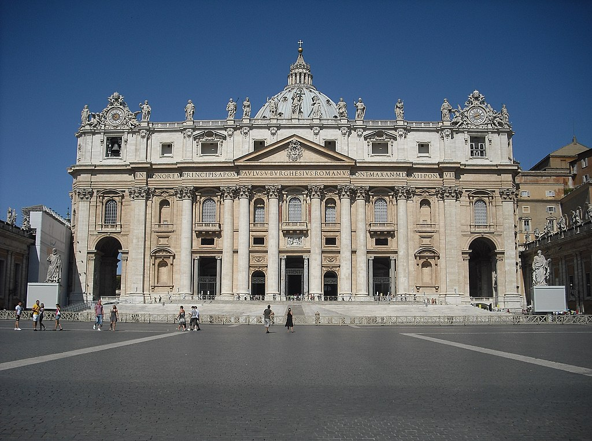
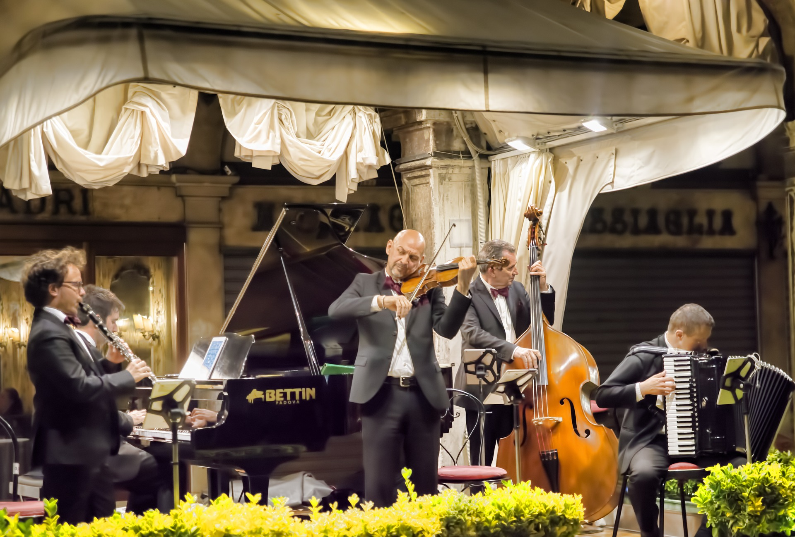
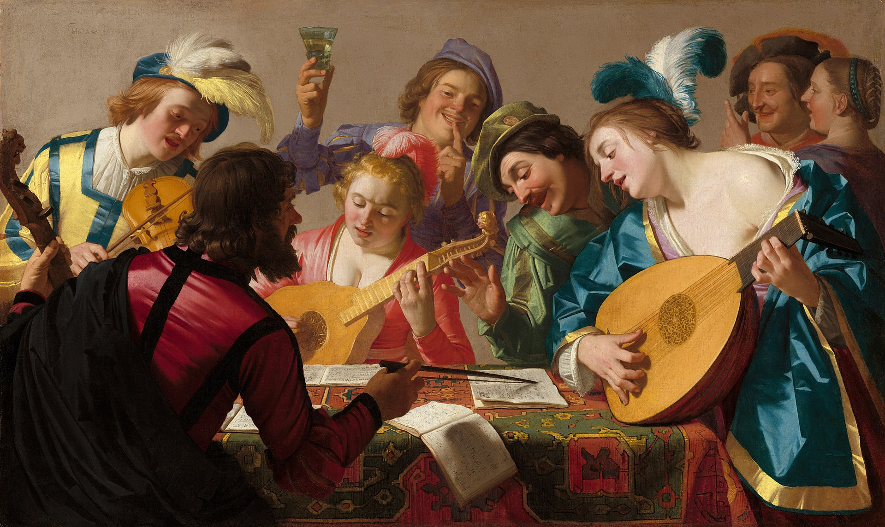
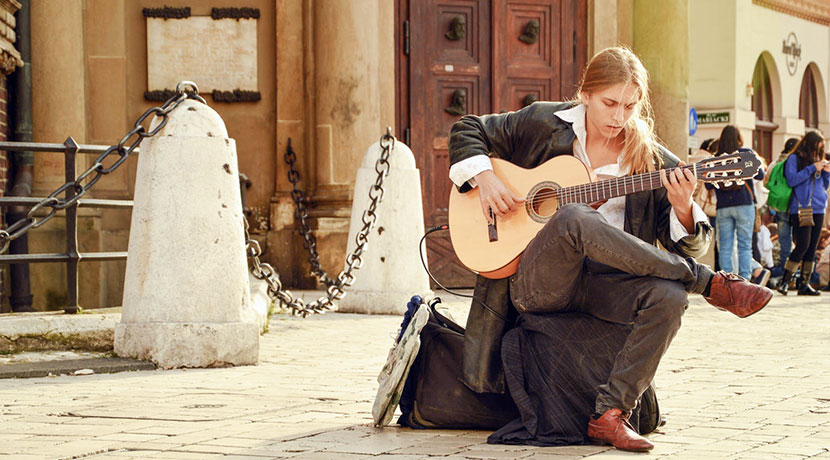

Cultures in ITALY



Arts
Italian art has influenced several major movements throughout the centuries and has produced several great artists. Italy is home to 58 World Heritage Sites, the largest number of any country in the world. The very numerous rock drawings in Valcamonica are as old as 8,000 BC, and there are rich remains of Etruscan art from thousands of tombs, as well as rich remains from the Greek cities at Paestum, Agrigento and elsewhere. The Roman remains in Italy are of extraordinary richness, from the grand Imperial monuments of Rome itself to the survival of exceptionally preserved ordinary buildings in Pompeii and neighbouring sites. Following the fall of the Roman Empire, in the Middle Ages Italy, remained an important centre, not only of the Carolingian art and Ottonian art of the Holy Roman Emperors, but for the Byzantine art of Ravenna and other sites.



Architectures
Italy is known for its considerable architectural achievements, such as the construction of arches, domes and similar structures during ancient Rome, the founding of the Renaissance architectural movement in the late-14th to 16th centuries, and being the homeland of Palladianism, a style of construction which inspired movements such as that of Neoclassical architecture, and influenced the designs which noblemen built their country houses all over the world, notably in the UK, Australia and the US during the late 17th to early 20th centuries. The history of architecture in Italy is one that begins with the ancient styles of the Etruscans and Greeks, progressing to classical Roman, then to the revival of the classical Roman era during the Renaissance and evolving into the Baroque era. During the period of the Italian Renaissance it had been customary for students of architecture to travel to Rome to study the ancient ruins and buildings as an essential part of their education


